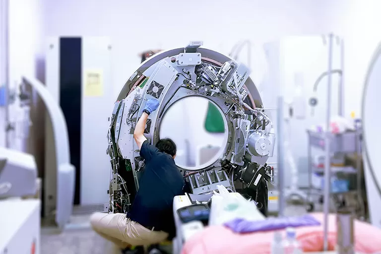

O tecnólogo em Sistemas Biomédicos é responsável por planejar, gerenciar, implantar e manter equipamentos clínicos e médico-hospitalares. Supervisiona e coordena equipes de manutenção e otimização do uso de equipamentos eletro-médicos. Assessora a aquisição, executa a instalação, capacita usuários de equipamentos e sistemas biomédicos, além de participar de equipes de pesquisa aplicada. Responsável também pela implantação e controle das normas de segurança dos equipamentosnos serviços de saúde, pode atuar em hospitais, policlínicas, laboratórios, fabricantes e distribuidoras de equipamentos hospitalares.
